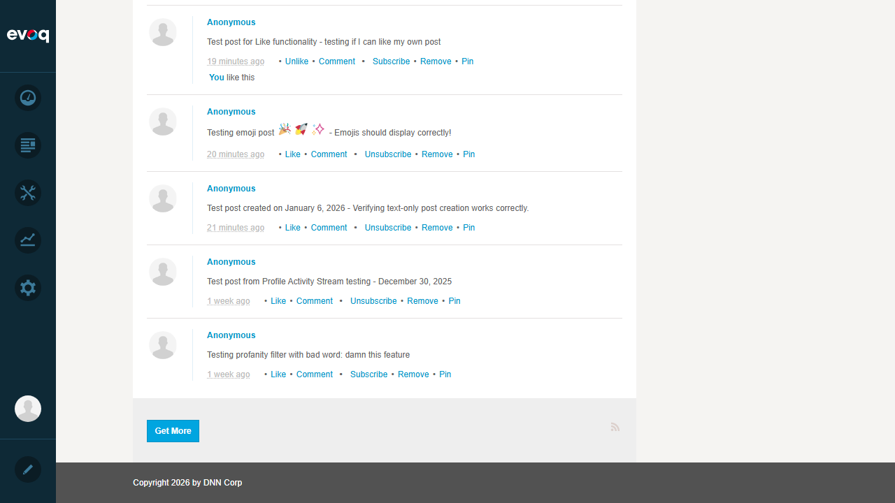
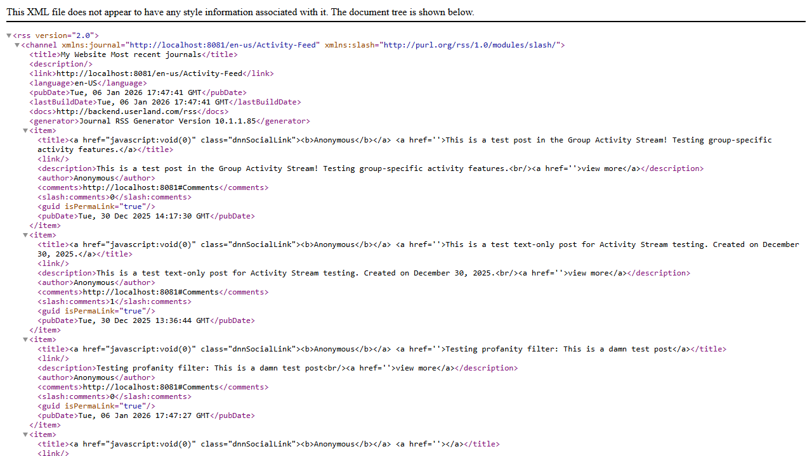

Test 1: Generate RSS Feed for User Profile Activity Stream
PASS
What was tested:
Verified that the RSS Feed icon is accessible from the Activity Stream and generates valid RSS 2.0 XML output containing activity stream entries.
Steps taken:
- Logged in as SuperUser Account (host)
- Navigated to Activity Feed page (http://localhost:8081/en-us/Activity-Feed/userId/1)
- Located the RSS Feed icon at the bottom of the Activity Stream (below "Get More" button)
- Clicked on the RSS Feed icon
- Verified the RSS Feed opened in a new tab with valid RSS 2.0 XML content
Evidence Screenshots:

Step 1: Activity Feed page showing user profile with Activity Stream

Step 2: Bottom of Activity Stream showing "Get More" button and RSS feed icon (small icon on bottom right)

Step 3: RSS Feed XML output showing valid RSS 2.0 format with channel and item elements
Verified RSS Feed Content:
- RSS Version: 2.0
- Channel Title: "My Website Most recent journals"
- Channel Link: http://localhost:8081/en-us/Activity-Feed
- Language: en-US
- Generator: Journal RSS Generator Version 10.1.1.85
- Items: Multiple activity stream entries with title, description, author, comments count, and pubDate
Result:
The RSS Feed feature works as expected. Clicking the RSS icon successfully generates a valid RSS 2.0 XML feed containing the activity stream entries.